6 écrans refaits avec le design system, mobile 390×844 (web). Même compte invité, mêmes conditions. Le gameplay reste l'écran le plus spectaculaire ; la navigation est plus calme.
Fond nuit pétrole uni, scores moi (jaune) / rival (corail), chrono crème → corail → rouge, 7 tirets sémantiques, question posée sans carte, réponses neutres. Révélation : vert + ✓, rouge + ✕, point corail = choix du rival.
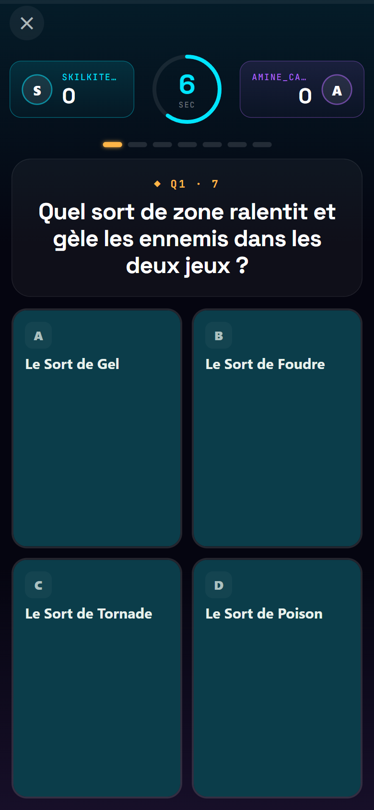
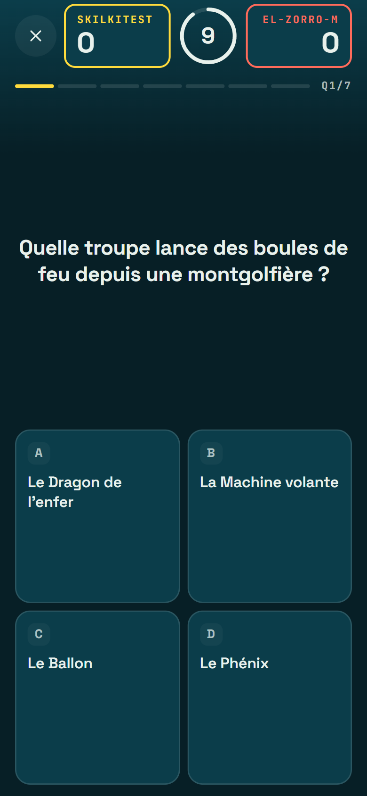
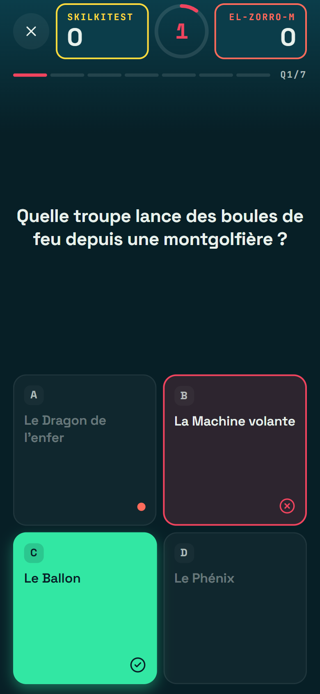
Moi = carte jaune, rival = carte corail (plus de cyan/violet), « vs » en Fraunces, décompte 72 px conservé, carte du monde sur une seule couche, épingle du rival en corail.
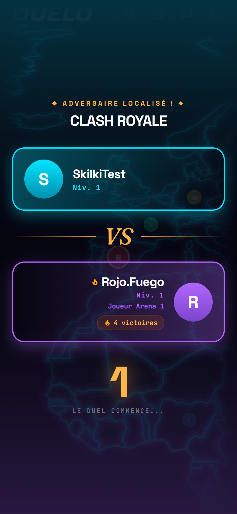
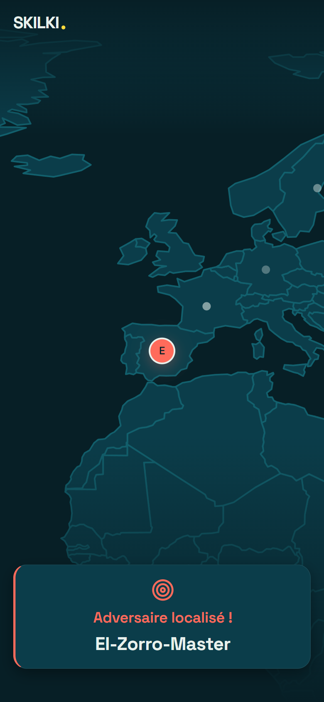
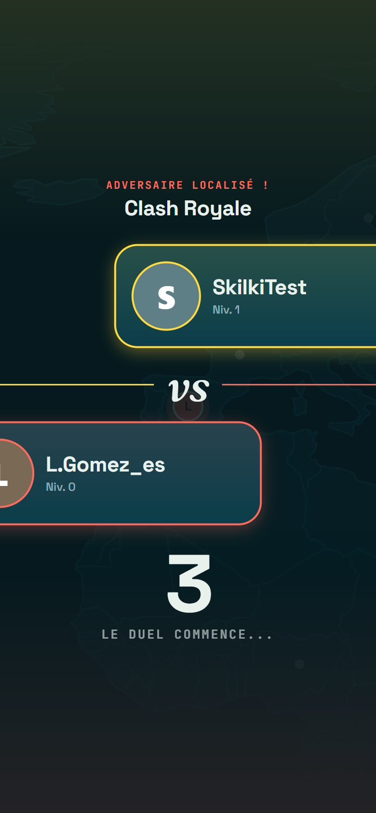
Hero à plat avec l'icône SKILKI sur plaque crème, « Jouer ce thème » jaune collant en bas (plus 3 boutons égaux), Suivre dans l'en-tête, progression unique avec paliers lisibles, classement en ligne, titre « Maître » en or.
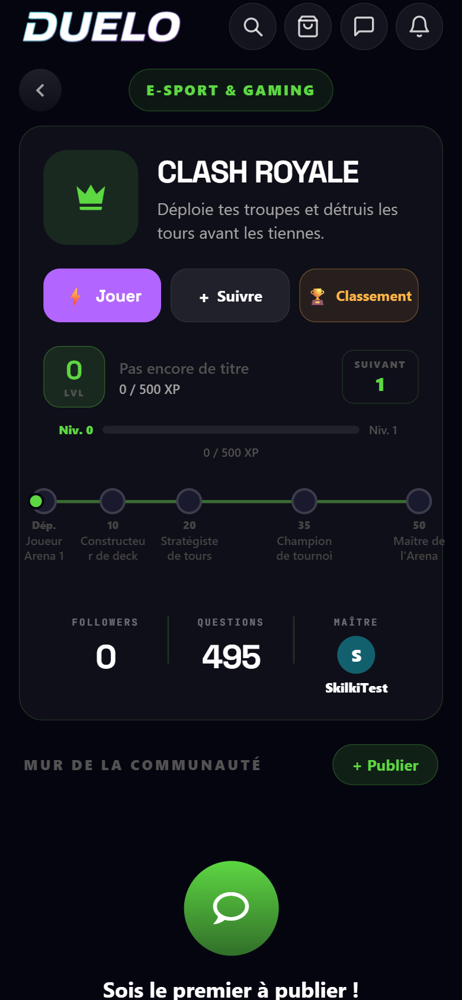
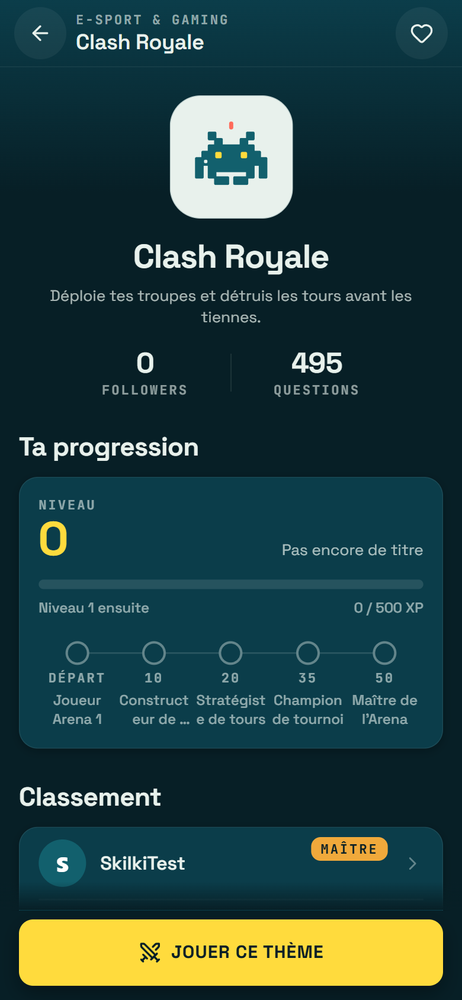
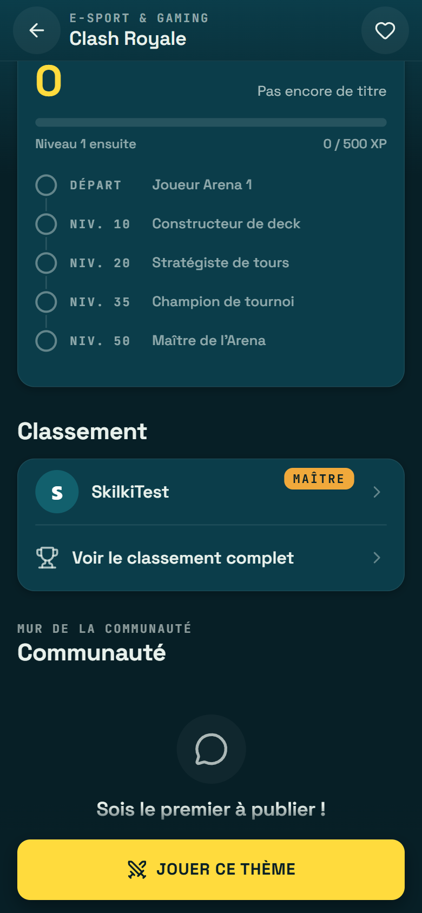
Recherche pleine largeur en tête, « Tes thèmes » en haut d'Explorer (pas sur l'accueil), univers à la une en aplat pétrole, grille des univers sans cartouches, « Voir tout » vers un écran liste plein écran.
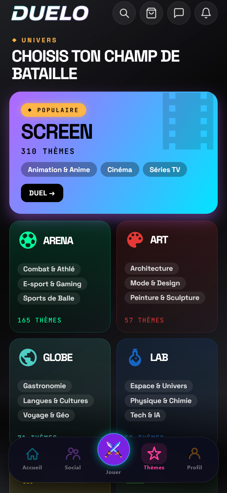
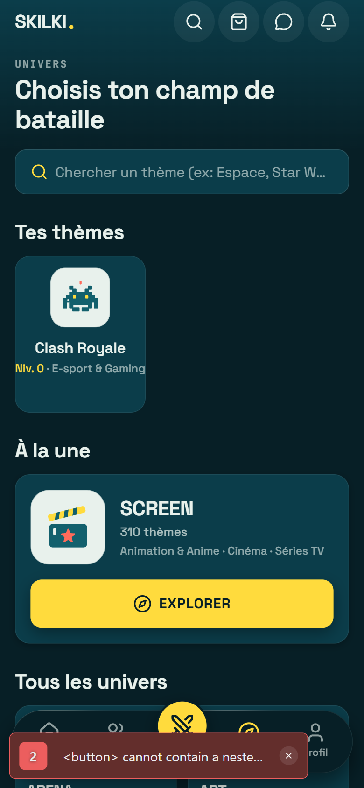
Compris en 2 secondes : un seul CTA jaune « Trouver un adversaire », progression + série, missions du jour, un seul carrousel. Roue, offres ×2, question du jour, ligue/rival/tournoi regroupés dans « Bonus & événements ». Tab bar : actif jaune, bouton Jouer jaune central, logotype SKILKI.
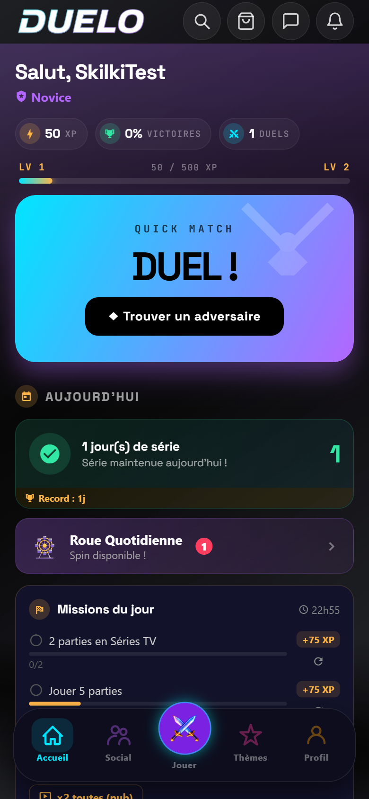
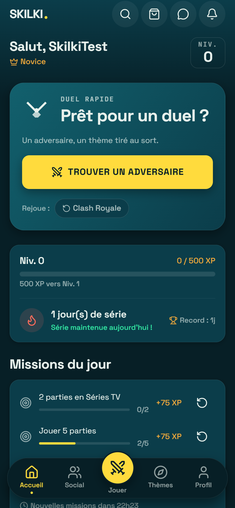
Niveau et progression en tête, rang en or, une seule carte de 4 stats (plus de doublons), succès, thèmes favoris. Réglages, parrainage, déconnexion et suppression de compte déplacés dans un écran Réglages (engrenage).
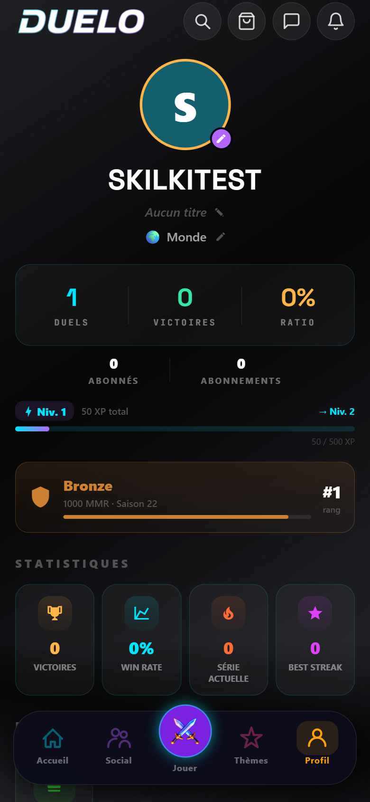
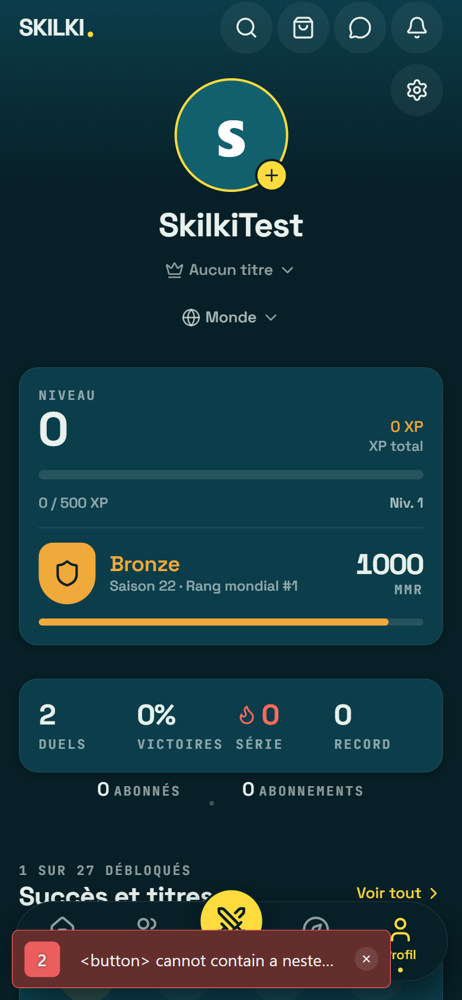